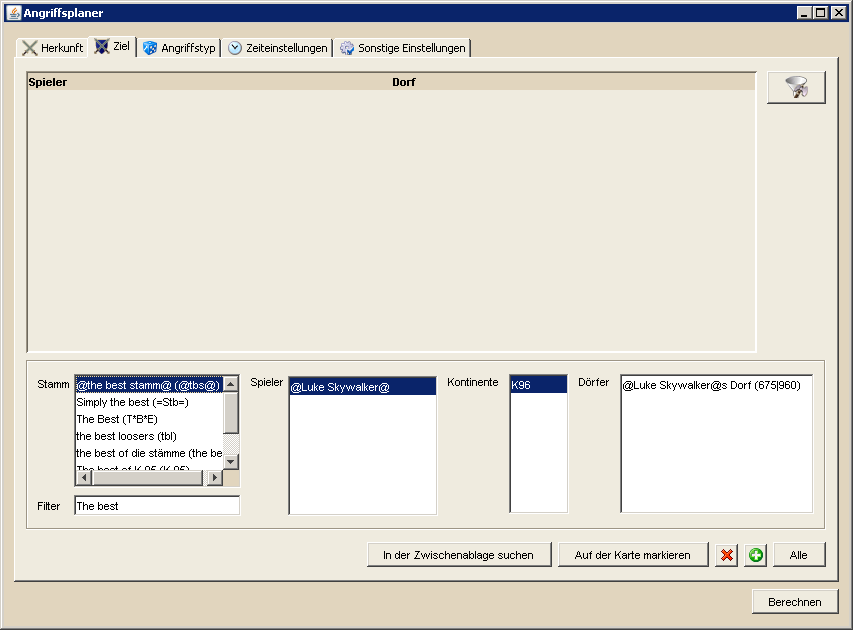

Angriffsplaner - Ziel |
||
|  | ||
| Die Auswahl der Angriffsziele ist ähnlich der Herkunft zu benutzen. Natürlich muss man hier den Spieler und die Dörfer angeben, die angegriffen werden sollen. Zusätzlich besteht die Möglichkeit, die Stammesliste zu filtern, um so schneller den gewünschten Zielstamm zu finden. Hierfür gibt man unter 'Filter' lediglich den Text ein, den der Stammesname oder Stammestag enthalten soll und die Liste der Stämme wird entsprechend angepasst. Für stammlose Spieler besteht unter der Stammauswahl die Möglichkeit, <Kein Stamm> anzuwählen, woraufhin die Zielauswahl alle stammlosen Spieler enthält. Die Auswahl des Kontinents dient dazu, die Anzahl der angreifbaren Dörfer des gewählten Spielers einzuschränken. Weiterhin ist es auch hier möglich, Zieldörfer die bereits in einem vorhandenen Angriffsplan auftauchen, über den Button in der rechten oberen Ecke herauszufiltern. |
||